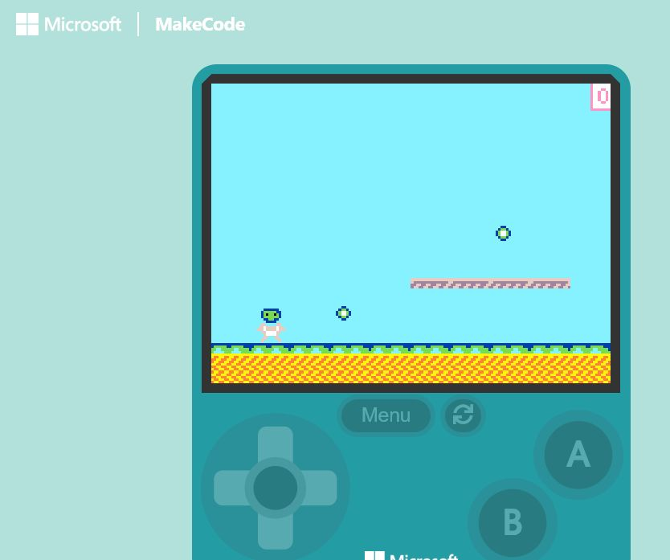
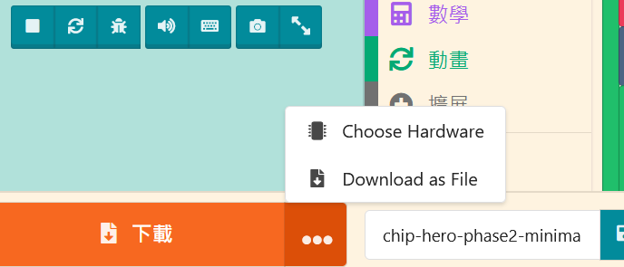
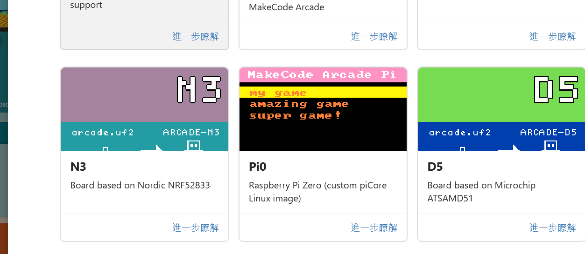

完成版遊戲展示
目前展示 Phase 3 能量晶片版本的實際畫面與硬體測試狀態。完整完成版模擬器與最終答案檔會在後續完成匯出與驗證後接入。
遊戲完成效果截圖

遊戲規則
- 左右移動並跳過平台。
- 收集能量晶片取得分數。
- 避開巡邏怪物並抵達終點傳送門。
完成版檔案欄位
完整完成版檔案尚未進入最終驗證；目前只接入 Phase 3 已存在的原始碼與專案包。
Phase 2 最小可玩版本狀態
TypeScript 原始碼已建立並在 MakeCode Arcade 編輯器中做過模擬器煙霧測試；PNG 與 UF2 實檔尚未保存到本網站。
Phase 3 能量晶片版本狀態
已通過實體 Arcade 遊戲機操作測試。
左右移動 passed
跳躍與晶片 passed
終點與長時間穩定性 pending
硬體：N3

